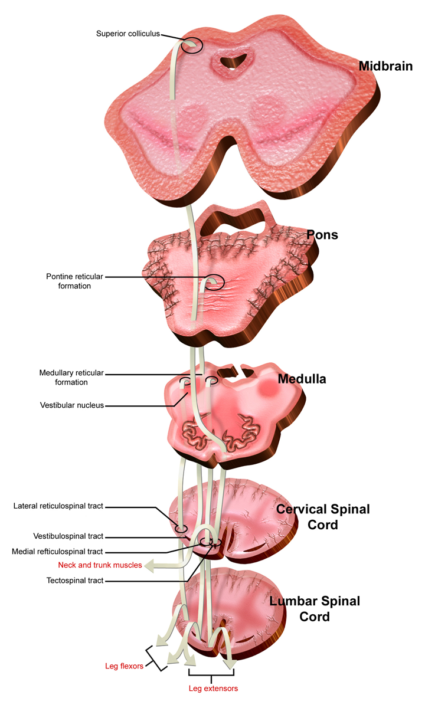
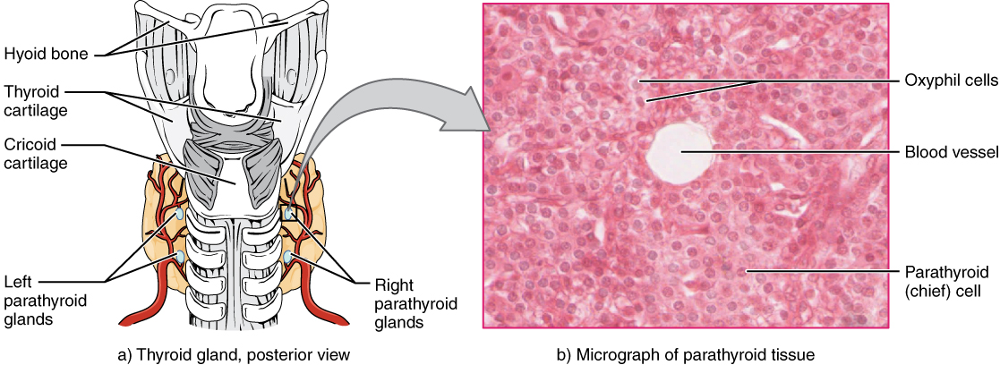
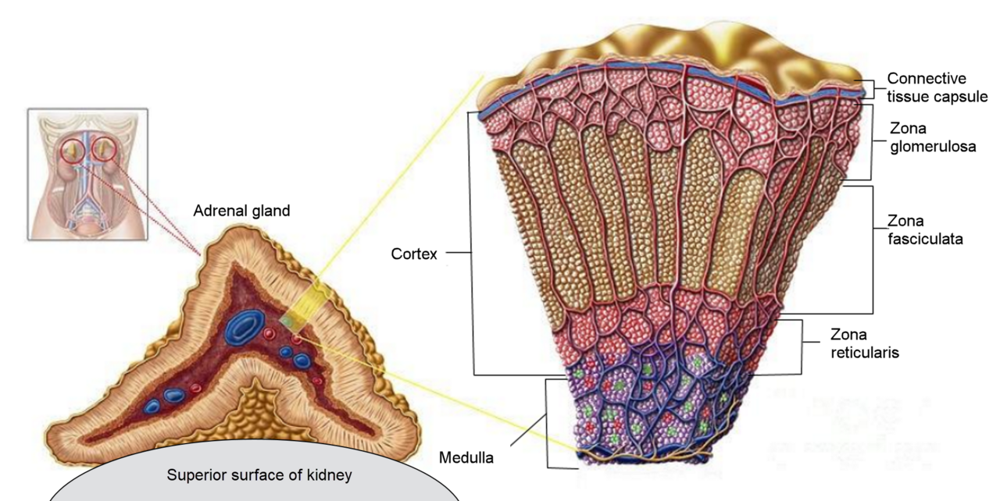
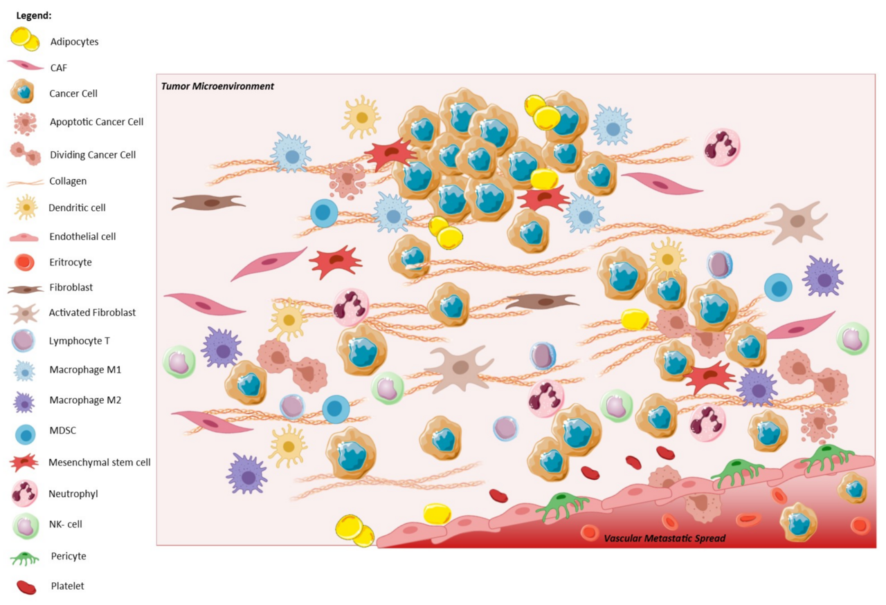

The Endocrine System
The nervous system sends private messages down insulated wires. You met it in Modules 5 and 6. It gets an answer in milliseconds. The endocrine system works the other way. It pours chemical messages into the blood. Those messages reach every cell in the body. Then the receptor decides who is listening. A receptor is the docking site a cell must have to hear the message. The endocrine system trades speed for reach and staying power. An action potential lasts about 1 millisecond. A pulse of thyroid hormone lasts about a week. This module is not a list of glands. Almost every hormone sits inside a negative feedback loop. That loop has one job. It defends a value the body wants to hold steady. Plasma calcium sits at roughly 9.5 mg/dL. Glucose sits near 90 mg/dL. Osmolality sits near 285 mOsm/kg. Sodium, blood pressure and core temperature are guarded the same way. In this module you learn how a molecule crosses a membrane, or fails to. You learn how a few hundred receptor molecules turn into millions of enzyme reactions. And you learn how a three-tier axis senses its own output and shuts itself off.
By the end of this module you can
- Tell endocrine, paracrine, autocrine and neural signaling apart. Compare them by speed, by distance traveled and by how long the effect lasts.
- Look at a hormone’s chemical class. Say whether its receptor sits on the plasma membrane or inside the cell. Say how fast its effect shows up.
- Trace a second messenger cascade. Use cAMP, IP3/DAG and the receptor tyrosine kinase pathways. Explain signal amplification.
- Draw the hypothalamic–pituitary–target axis. Name the variable, sensor, integrator, effector and response. Do that for at least four control loops.
- Explain how thyroid hormone is made. Start at the iodide trap and end at T3. Then link T3 to basal metabolic rate.
- Describe how the calcium-sensing receptor, PTH and calcitriol work together. Show how they hold ionized calcium within about 0.5 mg/dL.
- Explain what the adrenal cortex and the adrenal medulla put out. Include RAAS. Include cortisol’s diurnal rhythm, its daily rise and fall. Include its permissive effect on catecholamines.
- Explain how the beta cell senses glucose. Say what insulin and glucagon do. Name the counterregulatory hierarchy. It guards against hypoglycemia, which is low blood glucose.
- Tell primary, secondary and tertiary endocrine failure apart. Use a pair of lab values to do it.
Section 1Chemical Signaling: How a Hormone Changes a Cell

Broadcast signaling: reach, delay and duration
A hormone is a chemical messenger. A gland secretes it into the interstitial fluid, the fluid between cells. The blood then carries it. Only cells that carry the matching receptor detect it. What makes a hormone a hormone is the delivery route, not the molecule. Compare it with a neuron. A neuron releases perhaps 10,000 molecules of acetylcholine into a synaptic cleft 20 to 40 nanometers wide. Its target is the one cell on the other side. An endocrine cell does something different. It releases its product into a capillary. That product spreads into roughly 5 liters of plasma. So the level in blood is tiny. Thyroid hormone circulates near 10 to the minus 9 molar. Many peptides circulate near 10 to the minus 12 molar. Aim cannot give a hormone its specificity. Specificity comes only from which cells make the receptor.
That difference sets the timing. Nerve signals have a delay of about 1 millisecond. They stop when the firing stops. Hormone signals are slower. A peptide that uses a membrane receptor, such as insulin or epinephrine, takes seconds. A steroid or thyroid hormone must change gene reading first, so it takes hours. The signal lasts until the body clears the hormone away. We measure clearing with the half-life. That is the time it takes to remove half of what is there. Epinephrine runs about 1 to 3 minutes. Insulin runs about 5 to 6 minutes. Cortisol runs about 60 to 90 minutes. Thyroxine (T4) runs about 7 days. A short half-life buys tight control. A long half-life buys steadiness. Neither is better. Each one matches the value being defended. Blood pressure needs fixing second by second, so it uses catecholamines. Basal metabolic rate should not swing after one meal, so it uses T4.
Two more words finish the vocabulary. In paracrine signaling the messenger spreads only to neighboring cells. Histamine from mast cells works that way. So does somatostatin from islet delta cells acting on nearby beta cells. In autocrine signaling the cell answers its own secretion. Both use the same receptors and the same cascades. They just skip the bloodstream. That is why their effects stay local and brief.
Two chemical classes, two receptor addresses
One question predicts almost everything about a hormone. Is it fat-soluble? Lipophilic means fat-loving. The lipophilic hormones are the steroids and the thyroid hormones. The steroids are cortisol, aldosterone, testosterone, estradiol and calcitriol. They cross the cell membrane easily. Then they bind receptors in the cytosol or the nucleus. The hormone and its receptor stick together and land on DNA at a hormone response element. There they turn gene reading up or down. That work needs new messenger RNA and new protein. So the effect starts in 30 minutes to hours. It also lasts longer than the hormone does. Being fat-loving has a cost. These hormones do not dissolve well in plasma. So 90 to 99 percent rides bound to carrier proteins. Those carriers are thyroxine-binding globulin, corticosteroid-binding globulin and albumin. Only the free part is active. Only the free part is sensed by the feedback loop. That is why a clinician orders a free T4 and not a total T4. Pregnancy and estrogen therapy change the amount of binding protein, so the total number can mislead.
Hydrophilic means water-loving. These hormones cannot cross the membrane. They include the peptides and proteins. Insulin, glucagon, growth hormone, ADH, PTH and all the pituitary tropic hormones are peptides. The catecholamines belong here too. Each one binds a receptor on the cell surface. From there it must hand the message to a second messenger inside the cell. These hormones dissolve well in plasma. Most travel unbound, and the body clears them fast. Their effects begin in seconds to minutes. They open a channel, add a phosphate to an enzyme, or slide a transporter into the membrane. Every one of those steps undoes itself the moment the signal stops.
| Class | Examples | Where the receptor sits | How it travels in plasma | How fast / how long |
|---|---|---|---|---|
| Peptide / protein | Insulin, glucagon, PTH, ADH, GH, TSH, ACTH | Cell membrane | Mostly free | Seconds to minutes / minutes |
| Catecholamine (amine) | Epinephrine, norepinephrine | Cell membrane (adrenoceptors) | Mostly free | Seconds / 1 to 3 min |
| Steroid | Cortisol, aldosterone, estradiol, calcitriol | Inside the cell (cytosol or nucleus) | 90 to 99 percent bound | Hours / hours to days |
| Thyroid (amine, fat-soluble) | T4, T3 | Inside the cell (nucleus) | Over 99 percent bound | Hours to days / days to weeks |
Second messengers and amplification
The most common surface mechanism is the G-protein-coupled receptor. The hormone binds and the receptor changes shape. The G protein beside it swaps GDP for GTP. Its alpha subunit then switches on adenylyl cyclase. That enzyme turns ATP into cyclic AMP. Cyclic AMP switches on protein kinase A. That kinase adds phosphate to dozens of enzymes. Now look at the numbers. One hormone molecule may switch on several G proteins. Each cyclase makes hundreds of cAMP molecules. Each kinase acts on many targets. Say the cascade runs three steps and each step multiplies by 100. One binding event is then amplified roughly a millionfold. That is how a plasma level of 10 to the minus 12 molar changes metabolism in the whole body.
Two other cascades matter. The first is the phospholipase C pathway. ADH at V1 receptors uses it. So do angiotensin II, oxytocin and the alpha-1 adrenoceptors. The receptor makes two products, IP3 and DAG. IP3 releases stored calcium from the smooth endoplasmic reticulum. DAG switches on protein kinase C. Calcium then acts as the third messenger by binding calmodulin. The second is the receptor tyrosine kinase pathway. Insulin, IGF-1 and the growth factors use it. Here the receptor is an enzyme itself. Binding makes the receptor add phosphate to itself, then to a chain of docking proteins. The chain ends by moving GLUT4 transporters to the membrane. Growth hormone, prolactin and the cytokines use a cousin of this, the JAK/STAT system. In it the STAT protein travels to the nucleus and acts as a transcription factor itself.
The receptor is the bottleneck. So the cell controls how sensitive it is. A long stretch of high hormone causes downregulation. The cell pulls receptors inside, so the same level of hormone does less. That is a core feature of type 2 diabetes. It also explains tolerance to beta-agonist drugs. A long stretch of low hormone causes upregulation. So a tissue can grow extra sensitive. That happens when it loses its nerve supply, or stays suppressed a long time. It then overshoots when the signal comes back. Hormones also act on each other. A permissive effect means one hormone must be present for another to work at full strength. Cortisol is permissive for the vessel narrowing that epinephrine causes. Thyroid hormone is permissive for growth hormone. A synergistic effect means two together do more than the sum of each one alone. Glucagon plus epinephrine plus cortisol on liver glucose output is the example. An antagonistic effect means they oppose each other, as insulin opposes glucagon.
A hormone’s solubility predicts four things. It predicts where the receptor sits and how the hormone travels. It predicts how fast it acts and how long it lasts. Specificity is a separate matter. It comes only from which cells make the receptor. It never comes from where the blood goes.
Section 2The Hypothalamic–Pituitary Axis: A Three-Tier Control Loop

Two pituitaries with two completely different plumbing systems
The pituitary weighs about half a gram. It hangs from the hypothalamus on a stalk called the infundibulum. It looks like one organ. It is really two organs fused together. The posterior pituitary, also called the neurohypophysis, is nerve tissue. It is built from axon endings. Those axons belong to neurons whose cell bodies sit in the supraoptic and paraventricular nuclei of the hypothalamus. The posterior pituitary makes nothing at all. Antidiuretic hormone (ADH, also called vasopressin) and oxytocin are made in the hypothalamus. They travel down the axons. They wait in the endings until an action potential arrives. Calcium then enters and pushes them out. That is a neuroendocrine reflex. A nerve impulse goes in and a hormone comes out.
The anterior pituitary, also called the adenohypophysis, is gland tissue. No nerve runs to it directly. The hypothalamus reaches it by chemical instead. Hypothalamic neurons release their releasing and inhibiting hormones into a small capillary bed in the median eminence. Those capillaries drain into the hypophyseal portal veins. Those veins run down the stalk. Then they open into a second capillary bed among the anterior pituitary cells. A portal system is just two capillary beds in a row. Its purpose is to keep the message strong. A single nanogram of corticotropin-releasing hormone arrives undiluted by the rest of the circulation. Now cut the stalk. Every anterior hormone drops except prolactin, which rises. The reason is that the main hypothalamic signal for prolactin is dopamine, and dopamine holds prolactin down.
| Anterior hormone | Hypothalamic control | Main effect | Principal effect |
|---|---|---|---|
| TSH | TRH (+) | Thyroid follicular cells | Makes and releases T4 and T3 |
| ACTH | CRH (+) | Adrenal zona fasciculata | Makes cortisol |
| FSH and LH | GnRH (+, in pulses) | Gonads | Makes eggs and sperm. Makes sex steroids |
| Growth hormone | GHRH (+), somatostatin (−) | Liver, bone, muscle, adipose | IGF-1 release, growth in height, fat breakdown |
| Prolactin | Dopamine (−) is dominant | Breast (mammary gland) | Makes milk |
The three-tier negative feedback loop, drawn properly
Every axis in this module is built the same way. Name the parts out loud, because the whole course rests on them. Take the thyroid axis. The regulated variable is the level of free T4 and T3. The sensor and integrator are the hypothalamic and pituitary cells. They carry T3 receptors, so they read the blood level themselves. The effector is the thyroid follicular cell, and TSH drives it. The response is a change in how much hormone comes out. When free T4 rises, TRH and TSH fall. When free T4 falls, TSH rises. The loop is negative because the answer pushes against the change. So free T4 stays inside a narrow band. It does not sit on one fixed number. The set point is defended by small swings, not by a thermostat that never moves.
Feedback comes in three lengths. Long-loop means the target hormone holds down both the hypothalamus and the pituitary. Short-loop means the pituitary hormone holds down the hypothalamus. Ultra-short means a hormone holds down its own cell. The loop has three tiers, so a pair of laboratory values tells you which tier broke. Say the target hormone is low and the tropic hormone is high. Then the gland itself has failed. That is primary disease. A low free T4 with a TSH of 40 mU/L is primary hypothyroidism. Say both values are low. Then the pituitary or the hypothalamus has failed. That is secondary or tertiary disease. Say the target hormone is high and the tropic hormone is pushed down. Then the gland is running on its own. Read the pair, never the single value. That one rule carries further than anything else in endocrine physiology.
The rhythm matters as much as the amount. GnRH must arrive in pulses about every 60 to 90 minutes. That keeps the gonadotropes answering. A steady, nonstop GnRH signal does the opposite. It downregulates the receptor and shuts the axis off. Long-acting GnRH agonist drugs are used for exactly that purpose. Growth hormone comes out in 6 to 12 bursts a day. The largest burst comes soon after slow-wave sleep begins. Growth hormone works mostly by making the liver produce IGF-1. IGF-1 then feeds back on the pituitary. So one random GH value tells you almost nothing. IGF-1 has a long half-life and a steady level, so it reports the average.
Posterior pituitary: osmolality, volume and a genuine positive feedback loop
ADH is the body’s water valve. The regulated variable is plasma osmolality, which is how crowded with particles the plasma is. It normally runs 275 to 295 mOsm/kg. The sensors are osmoreceptor neurons in the hypothalamus. They shrink when osmolality rises. A change of only 1 to 2 percent, about 3 to 6 mOsm/kg, already moves ADH secretion. The effector is the principal cell of the collecting duct. ADH binds V2 receptors there and works through cAMP. That slides aquaporin-2 water channels into the apical membrane. Water then follows the osmotic gradient of the medulla back into the blood. So urine osmolality can swing from about 50 to 1200 mOsm/kg. Volume is a second trigger. It is less sensitive than osmolality but far more powerful. A fall in blood volume or pressure of 8 to 10 percent is picked up by baroreceptors. That drives ADH even when osmolality is low. In a hemorrhage, defending volume beats defending concentration.
Oxytocin gives us one of the few true positive feedback loops in the body. During labor, stretch of the cervix signals the hypothalamus. Oxytocin comes out. The uterus contracts. That contraction stretches the cervix even more. Each turn of the loop makes the stimulus bigger instead of smaller. The loop is explosive on purpose. Only delivery ends it, because delivery removes the stretch. The suckling reflex ejects milk the same way. Positive feedback is the exception in the body because it is unstable. It shows up only where an event must be driven fast to a finish. Labor is one. Clotting is another. So is the upstroke of the action potential you studied in Module 5.
The hypothalamus commands the anterior pituitary by chemical. It sends the order through a portal system. It commands the posterior pituitary by electricity. It sends that order down axons. In every axis, the target hormone feeds back on the tiers above it. So read a tropic value and a target value together. That pair tells you which tier failed.
Section 3Metabolic Rate and the Calcium Set Point: Thyroid and Parathyroid

Making thyroid hormone: the iodide trap and the colloid store
The thyroid is the only gland that stores its hormone outside its cells. It keeps it in the colloid inside each follicle. The store lasts 2 to 3 months. Making the hormone takes four steps. First comes the iodide trap. The sodium–iodide symporter sits on the basolateral membrane. It pumps iodide into the follicular cell against a 20- to 40-fold gradient. The Na+/K+-ATPase pays for that pumping indirectly. Second, the cell sends thyroglobulin out into the colloid. Thyroglobulin is a big protein loaded with tyrosine. Third, thyroid peroxidase works at the apical surface. It oxidizes iodide and sticks it onto those tyrosines. That makes monoiodotyrosine and diiodotyrosine. Then it joins two of them together. DIT plus DIT makes T4. MIT plus DIT makes T3. Fourth, TSH tells the cell to swallow droplets of colloid. Lysosomal proteases cut the hormone free. T4 and T3 then move into the blood.
About 90 percent of what the gland releases is T4. But T4 is mostly a prohormone, a starter form. Deiodinase enzymes in the liver, kidney and muscle take one iodine off. That makes T3. T3 grips the nuclear receptor roughly ten times as tightly. Take the iodine off the other ring instead and you get reverse T3. Reverse T3 does nothing. It is a controlled off-switch. It rises in starvation and in serious illness, and it lowers how much fuel the body burns. Over 99.9 percent of the T4 in blood is stuck to protein. That gives T4 a 7-day half-life. It also keeps the free level from swinging hour to hour.
So what does T3 actually do? It turns up the reading of the Na+/K+-ATPase gene and of the mitochondrial enzyme genes. It does this in nearly every tissue. Resting oxygen use goes up. Heat production goes up. T3 is the main setter of the basal metabolic rate. T3 also raises the number of beta-1 adrenergic receptors in the heart. That is why thyrotoxicosis brings a fast heart rate, a wide pulse pressure and tremor. Those signs look sympathetic even though catecholamine levels are normal. T3 is needed for normal myelin and normal branching of neurons before and after birth. That is why untreated congenital hypothyroidism causes permanent harm to thinking. It is also why every newborn is screened. The typical adult reference values are worth learning. TSH runs 0.4 to 4.0 mU/L. Free T4 runs 0.8 to 1.8 ng/dL. Total T3 runs 80 to 180 ng/dL.
| Variable | Hypothyroid (too little T3 action) | Hyperthyroid (too much T3 action) |
|---|---|---|
| Basal metabolic rate | Down. Weight goes up on the same intake | Up. Weight drops even with a good appetite |
| Heat balance | Feels cold, dry skin | Feels hot, sweating |
| Heart | Slow heart rate, low output | Fast heart rate, palpitations, atrial fibrillation |
| Nervous system | Slow thinking, reflexes relax slowly | Anxiety, fine tremor, quick reflexes |
| Gut | Constipation | Frequent stools |
| TSH in primary disease | High (often over 10 mU/L) | Pushed down (under 0.1 mU/L) |
The calcium loop: the tightest set point in the body
Total plasma calcium is held between about 8.5 and 10.5 mg/dL. Only one part of it matters. That part is free ionized calcium, roughly 4.5 to 5.3 mg/dL, or 1.1 to 1.3 mmol/L. The body defends it within a few tenths of a milligram per deciliter. The reason for that tight control is electrical. Calcium outside the cell steadies the voltage-gated sodium channels. So low calcium lowers the threshold for firing. Nerves then fire on their own. That gives tetany, carpopedal spasm and laryngospasm. High calcium raises the threshold instead. That gives sleepiness, weakness and constipation. Calcium is also the trigger for muscle contraction, for exocytosis and for clotting. It cannot be allowed to drift.
This loop is neat because the sensor is also the effector. Chief cells sit in the four parathyroid glands. Each one carries a calcium-sensing receptor on its surface. When ionized calcium falls, less calcium sits on that receptor. The cell then releases parathyroid hormone within seconds. That is a direct, one-step negative feedback loop. No pituitary is involved at all. Normal PTH runs about 10 to 65 pg/mL. PTH raises calcium by three routes. The first is bone. PTH binds osteoblasts. Those cells display RANK ligand, which switches on osteoclasts. The osteoclasts free calcium and phosphate from hydroxyapatite. Nonstop PTH eats bone away. PTH given in short doses, as with teriparatide, builds bone instead. The second route is the kidney. There PTH pulls more calcium back in the distal tubule. It also lets more phosphate go in the proximal tubule. Dumping phosphate matters. Otherwise phosphate would grab the calcium you just released. The third route is also in the kidney. PTH switches on 1-alpha-hydroxylase. That enzyme turns 25-hydroxyvitamin D into calcitriol.
Calcitriol is the slow arm of the loop. It is a steroid, so it walks straight into intestinal lining cells. There it binds a nuclear receptor and turns on calcium-carrying transport proteins. That raises how much dietary calcium you absorb. The share climbs from roughly 10 to 15 percent up to 30 to 40 percent. Calcitriol needs hours to days to work. So the two hormones split the job. PTH handles minute-to-minute correction from bone and kidney. Calcitriol handles the daily balance from the gut. Calcitonin comes from the parafollicular C cells of the thyroid. It opposes PTH by shutting down osteoclasts. In adult humans it does very little. Patients with no thyroid keep a normal calcium. So do patients with calcitonin-secreting tumors.
Thyroid hormone sets the pace of metabolism. It works through a slow axis that the pituitary controls and that carrier proteins buffer. Parathyroid hormone defends ionized calcium instead. It works through a fast, single-step loop. In that loop the parathyroid cell is both the sensor and the effector.
Section 4The Adrenal Gland: Salt, Sugar and Speed

One organ, two embryological origins
The adrenal cortex grows from mesoderm. It makes steroids out of cholesterol. The medulla grows from neural crest. It makes catecholamines. The two are packed together for a reason. Venous blood leaving the cortex is loaded with cortisol. That blood drains through the medulla. Cortisol there switches on the enzyme that turns norepinephrine into epinephrine. So the stress axis feeds itself, side by side. The cortex has three zones. Read them from outside in as salt, sugar, sex.
| Zone | What it makes | Main trigger | Main action |
|---|---|---|---|
| Zona glomerulosa | Aldosterone | Angiotensin II, high plasma K+ | Kidney takes back Na+ and lets go of K+ and H+ |
| Zona fasciculata | Cortisol | ACTH (on a daily rhythm) | Makes new glucose, breaks down fat and protein, damps inflammation |
| Zona reticularis | DHEA, androstenedione | ACTH | Weak androgens. Adrenarche and female libido |
| Medulla | Epinephrine (about 80 percent), norepinephrine | Preganglionic sympathetic fibers | Fight-or-flight. Heart rate, force of beat, glycogen breakdown |
Aldosterone and the renin–angiotensin–aldosterone system
Aldosterone defends the volume of fluid outside the cells. It does that by defending sodium. Guarding that volume guards blood pressure. The loop starts in the kidney. Juxtaglomerular cells release renin for three reasons. Renal perfusion pressure falls. Or sympathetic beta-1 stimulation rises. Or the macula densa senses too little sodium chloride going past. Renin then cuts angiotensinogen, a protein the liver sends into the blood. That cut makes angiotensin I. Angiotensin-converting enzyme finishes the job. It sits mostly in the lining of the lung capillaries. It turns angiotensin I into angiotensin II. Angiotensin II raises pressure three ways. It narrows arterioles directly. It drives thirst and ADH. And it tells the zona glomerulosa to release aldosterone.
Aldosterone acts on the principal cell of the collecting duct. It is a steroid, so it goes into the nucleus. There it builds more epithelial sodium channels for the apical membrane. It also builds more Na+/K+-ATPase pumps for the basolateral side. Sodium is then taken back into the blood. Water follows it by osmosis. Potassium and hydrogen ion go the other way, into the tubular fluid. All of this takes about 1 to 2 hours to start, because gene reading comes first. Notice what does not happen. Plasma sodium concentration usually does not climb much. Aldosterone keeps sodium and water together. So it grows the volume rather than the concentration. Notice the second trigger too. A rise in plasma potassium of only 0.1 to 0.2 mEq/L pushes aldosterone out directly, with no renin needed. That makes aldosterone the main defense of potassium balance as well.
Use the flow rule again. Q = ΔP / R works like Ohm’s law. Turn it around and it reads ΔP = Q × R. Angiotensin II raises R by narrowing arterioles. Aldosterone raises Q by adding volume to the vessels. That raises the venous return the heart can pump out. So RAAS lifts pressure through both terms on the right of that equation. That is why blocking the system anywhere works so well against high blood pressure. ACE inhibitors, angiotensin receptor blockers and aldosterone antagonists all do it. It is also why those drugs tend to raise serum potassium.
Cortisol, the HPA axis and the stress response
Cortisol follows a strong diurnal rhythm, which means it rises and falls over a day. Pulses of CRH from the hypothalamus drive it. The peak comes around 6 to 8 a.m., at roughly 10 to 20 µg/dL. The low point comes near midnight, under about 5 µg/dL. Total output is about 15 to 20 mg a day. It climbs several-fold with surgery, sepsis, trauma or hypoglycemia. The feedback loop is the usual three-tier design. Cortisol holds down both CRH and ACTH. That explains a common danger. Steroid drugs given as treatment suppress the axis. The adrenal cortex then shrinks over weeks. Stopping the drug suddenly can set off an adrenal crisis. The suppressed gland cannot answer the demand.
Cortisol frees up fuel. It is a catabolic hormone, meaning it breaks stores down. Its purpose is to keep glucose in the plasma for the brain. It switches on the liver enzymes that build new glucose. It breaks down protein in skeletal muscle to supply the amino acids for that. It breaks down fat, while moving stored fat toward the center of the body. And it opposes insulin in the outer tissues. Cortisol is also strongly permissive. Without it, catecholamines cannot hold vessel tone. That is why an adrenal crisis brings low blood pressure. Fluids and pressors barely help. It answers hydrocortisone. At drug-level doses cortisol suppresses phospholipase A2 and cytokine gene reading. It steadies lysosomes. It damps the immune and inflammatory response. That is useful in treatment. The same actions cause the classic long-term picture. That picture is hyperglycemia, thin skin, wasted muscle, osteoporosis and poor healing.
The medulla finishes the stress response on a different clock. Chromaffin cells are really postganglionic sympathetic neurons that lost their axons. Preganglionic fibers drop acetylcholine onto them. They then secrete straight into the blood. The signal is hormonal, not synaptic. So it reaches tissues that have no sympathetic nerve supply. It also outlasts the nerve traffic by a few minutes. Epinephrine works at three receptor types. At beta-1 receptors on the heart it raises rate and contractility. At beta-2 on bronchioles and skeletal muscle arterioles it widens them. At alpha-1 on skin and splanchnic arterioles it narrows them. On the metabolic side it breaks down glycogen and fat. Cortisol takes hours. Epinephrine takes seconds. Together they cover a threat from start to finish.
The adrenal cortex defends volume with aldosterone. It defends fuel supply with cortisol. Both work over hours. The medulla adds a catecholamine surge that lands in seconds. Cortisol is what makes that surge work, through its permissive effect.
Section 5Pancreatic Islets and the Defense of Blood Glucose

How a beta cell measures glucose
Fasting plasma glucose stays between about 70 and 99 mg/dL. Even after a large meal it rarely passes 140 mg/dL. That is a remarkably tight band. Think about what it is up against. One meal may deliver 100 grams of carbohydrate. The whole plasma pool holds only about 4 grams of glucose. The sensor is the beta cell itself. Memorize how it works, because it links straight back to the membrane physiology of Module 5. Glucose enters the beta cell through GLUT2. GLUT2 is a high-capacity transporter, so inside and outside stay level with each other. Glucose inside therefore tracks glucose in plasma. Next comes glucokinase. Its Michaelis constant is high, near 10 mmol/L. So it adds phosphate at a rate that matches the glucose level. That enzyme is the true glucose sensor. Burning the glucose raises the ATP/ADP ratio. ATP then closes the ATP-sensitive potassium channel. Potassium can no longer leak out, so the cell depolarizes. Voltage-gated calcium channels open. Calcium comes in and pushes the insulin granules out.
Release comes in two phases. The first phase is sharp. It uses granules already parked at the membrane, and it runs within 2 to 5 minutes. The second phase is steady. It uses granules brought up afterward. Losing the first phase is the earliest beta-cell defect you can measure in type 2 diabetes. Two amplifiers are worth knowing. Glucose taken by mouth causes far more insulin than the same amount given into a vein. The gut is the reason. It releases incretins, which are GLP-1 and GIP. They boost the insulin that glucose calls for. A whole modern drug class is built on that. The second amplifier is the vagus nerve. Parasympathetic traffic primes insulin release during the cephalic phase, before any nutrient has been absorbed.
Insulin, glucagon and the counterregulatory hierarchy
Insulin is the only hormone that lowers blood glucose. Its signature move is sliding GLUT4 transporters into the membranes of skeletal muscle and adipose cells. Those two tissues take in almost no glucose without insulin. Liver, brain, kidney and red cells use transporters that do not need insulin. That is why the brain keeps eating glucose even when insulin is absent. Insulin does far more than move glucose. It is the master anabolic signal, the build-it-up signal. It switches on glycogen synthase and switches off glycogen phosphorylase. It switches on lipoprotein lipase and fat storage, and switches off hormone-sensitive lipase. It pulls amino acids into cells and drives protein building. It also pushes potassium into cells using the Na+/K+-ATPase. That last action is why insulin plus glucose is a standard emergency treatment for hyperkalemia.
Glucagon comes from the alpha cell. It is the mirror image of insulin. Its target is almost entirely the liver. It works through cAMP. Within minutes it breaks stored glycogen down. Then it builds new glucose from lactate, glycerol and amino acids. If the fast goes on, it makes ketones. Neither hormone decides the outcome alone. The insulin-to-glucagon ratio decides whether the liver stores fuel or exports it. Now let glucose keep falling. The defenses switch on in order. Insulin secretion stops at about 80 mg/dL. Glucagon and epinephrine come out at about 65 to 70 mg/dL. Cortisol and growth hormone follow. Below about 50 mg/dL the brain itself runs short, and confusion and seizure appear. Why so many backups? The brain stores no fuel of its own. It dies from hypoglycemia faster than from almost any other metabolic insult. There is one hormone to lower glucose and at least four to raise it.
| What to look at | Fed state (high insulin/glucagon ratio) | Fasted state (low ratio) |
|---|---|---|
| Liver glycogen | Being built | Broken down, then new glucose is built |
| Muscle and fat glucose uptake | High, via GLUT4 | Very low. Muscle burns fatty acids |
| Adipose (fat) tissue | Stores triglyceride | Breaks fat down, releases free fatty acids |
| Ketone production | Held down | Rises after 12 to 24 hours. Fuels the brain by day 3 |
| Hormones in charge | Insulin, incretins | Glucagon, epinephrine, cortisol, GH |
When the loop fails, and the other endocrine tissues
In type 1 diabetes the immune system destroys the beta cells. Insulin is absent. Glucose cannot get into muscle and fat. Fat breakdown runs with nothing to oppose it. The liver turns that flood of fatty acids into ketoacids. The result is diabetic ketoacidosis. Glucose often runs 300 to 600 mg/dL. Arterial pH drops under 7.30. An anion gap opens. The patient breathes deep and fast, which is Kussmaul breathing, as the lungs compensate. Glucose passes the kidney reabsorption threshold near 180 mg/dL, so it drags water out into the urine. Type 2 diabetes starts a different way. The problem is insulin resistance, at the receptor and past it. The beta cell answers with extra insulin for years, then fails. A little insulin is still around. So fat breakdown stays partly held back and ketoacidosis is uncommon. When type 2 does break down, it makes a hyperosmolar state instead. Glucose passes 600 mg/dL and the patient is badly dehydrated. Long-run control is reported by glycated hemoglobin, or HbA1c. It reflects the last 8 to 12 weeks, because a red cell lives about 120 days.
Hormones do not come only from named glands. Adipose tissue secretes leptin. Leptin reports how much fat you carry to the hypothalamus, and it lowers appetite over the long run. Adipose tissue also secretes adiponectin, which improves insulin sensitivity. The kidney secretes erythropoietin when its tissue runs short of oxygen. The kidney also performs the final step that activates vitamin D. The heart secretes atrial natriuretic peptide when the atria are stretched more than usual. That peptide dumps sodium and water, so it works directly against RAAS. The stomach secretes ghrelin. Ghrelin rises before meals and makes you hungry. The pineal gland secretes melatonin at night. Light sets its schedule through the suprachiasmatic nucleus. The thymus secretes thymosins, which mature T cells. You meet those again in Module 11.
The beta cell turns a glucose level into a membrane depolarization. That change then becomes insulin release. Next the insulin-to-glucagon ratio takes over. That ratio decides one thing. Does the body store fuel, or send it out? Neither hormone decides that alone.
The module in one breath
Endocrine control is broadcast control. A messenger goes into the blood. It reaches every cell. It acts only where the matching receptor exists. Solubility decides the rest. Lipophilic steroids and thyroid hormone travel bound to carrier proteins. They enter the nucleus and change gene reading. Their effects run over hours to days. Hydrophilic peptides and catecholamines travel free. They bind surface receptors. They work through second messengers such as cyclic AMP, IP3 with calcium, or receptor tyrosine kinases. Those cascades amplify one binding event a millionfold in seconds. Above the glands sits the hypothalamus. It commands the anterior pituitary by chemical, through the hypophyseal portal veins. It commands the posterior pituitary by electricity, through axons. Every axis below it closes with negative feedback. So read a tropic value and a target value together. The pair points to the gland, the pituitary or the hypothalamus. Thyroid hormone sets the basal metabolic rate. PTH and calcitriol defend ionized calcium. They hold it within a few tenths of a milligram per deciliter. Excitable membranes demand that much care. Aldosterone defends volume and potassium. Cortisol defends fuel and makes catecholamines effective. Insulin and glucagon defend a glucose set point, with one hormone down and four hormones up. Positive feedback appears in only a handful of places. Labor and milk ejection are two of them. It is useful precisely because it is unstable, and something outside the loop always ends it.
Words worth knowing
| Term | What it means |
|---|---|
| Hormone | A chemical messenger released into the blood. It acts on any cell that carries its receptor. |
| Paracrine / autocrine | Local signaling to neighboring cells, or back to the cell that made it. It never enters the circulation. |
| Second messenger | A molecule inside the cell that passes on and amplifies a surface receptor signal. cAMP, IP3, DAG and Ca2+ are the main ones. |
| Amplification | Each step of a cascade multiplies the signal. A picomolar amount of hormone ends up making a large cellular response. |
| Downregulation | Loss of receptors after a long stretch of high hormone. The target cell becomes less sensitive. |
| Permissive effect | One hormone must be present for another to work at full strength. Cortisol does this for catecholamines. |
| Tropic hormone | A pituitary hormone whose target is another endocrine gland. TSH, ACTH, FSH and LH are tropic. |
| Hypophyseal portal system | Two capillary beds in a row. They carry hypothalamic releasing hormones straight to the anterior pituitary. |
| Negative feedback | A loop whose answer pushes against the change. It holds a variable near its set point. |
| Positive feedback | A loop that makes its own stimulus bigger. It is normal only where an event must run to a finish, as in labor and milk ejection. |
| Iodide trap | The sodium–iodide symporter pumping iodide into the cell against a 20- to 40-fold gradient. |
| Thyroglobulin | The colloid protein that thyroid hormone is built on and stored on, outside the cell. |
| Deiodinase | An enzyme outside the thyroid that turns T4 into active T3, or into inactive reverse T3. |
| Calcium-sensing receptor | A receptor on the parathyroid cell surface. It reads ionized calcium and sets PTH release within seconds. |
| Calcitriol | Active vitamin D. It raises gut calcium absorption from about 10 to 15 percent up to 30 to 40 percent. |
| RAAS | The renin–angiotensin–aldosterone system. It defends blood pressure by raising both resistance and volume. |
| Chromaffin cell | A cell of the adrenal medulla. It is really a postganglionic sympathetic neuron that secretes into the blood. |
| Incretin | A gut hormone, GLP-1 or GIP. It boosts glucose-driven insulin release after food is taken by mouth. |
| GLUT4 | The glucose transporter that answers insulin. It works in skeletal muscle and adipose tissue. |
| Counterregulatory hormone | Any hormone that raises plasma glucose. Glucagon, epinephrine, cortisol and growth hormone are the four. |